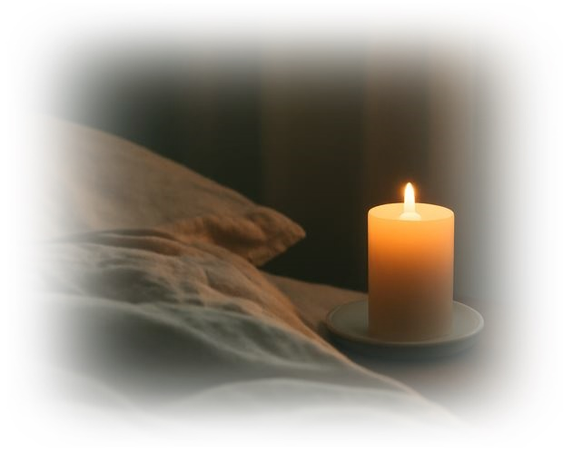

밤은 많은 이들에게 하루의 끝을 의미하지만, 동시에 내면의 깊은 정서를 재조정하는 중요한 시간대이기도 하다. 이 장에서는 밤 시간 동안의 각성이 어떻게 심리적으로 작용하는지, 그리고 ‘작은 움직임’이 회복 과정에 미치는 영향을 탐구하고자 한다.
수면의 질이 낮아지거나 불안으로 인해 자주 깨어나는 밤의 시간은 단순히 피로의 결과가 아니라, 신체와 정신이 조화를 찾으려는 시도의 일환이다. 이러한 각성과 작은 움직임은 우리가 감정을 다루고, 스트레스를 해소하며, 정서적 회복을 이루는 중요한 과정임을 설명한다.
이 글은 브런치북( https://brunch.co.kr/@205593d149c84b6/3) 『감정도 잠이 필요하다』 '5장. 밤마다 깨어 있는 나를 위로하며'에 포함된 내용으로써 밤 시간 각성과 ‘작은 움직임’에 대하여 스스로를 데우는 회복의 과정을 탐구한다.
1. 밤의 각성과 내면의 움직임
밤 시간의 각성은 단순히 잠을 이루지 못하는 현상이 아니다. 그것은 내면에서 진행되는 중요한 심리적 과정으로, 과도한 스트레스와 미해결된 감정들이 낮에 억제되어 있다가 밤의 고요 속에서 표면으로 드러나는 것이다. 이러한 각성은 주로 불안, 걱정, 그리고 미완성된 감정들이 원인으로 작용하며, 이는 심리적 균형을 맞추려는 무의식적인 시도의 일환이다.
작은 움직임은 이 과정을 조절하는 중요한 역할을 한다. 가벼운 호흡, 손톱을 문지르거나 팔꿈치를 살짝 흔드는 것과 같은 소소한 신체적 활동은 신체를 깨우고, 긴장을 완화하며, 잠을 방해하는 각성을 관리하는 데 도움을 준다. 이러한 작은 움직임이 바로 심리적, 생리적 안정을 이루는 데 중요한 역할을 한다는 점에서 그 심리적 기제를 이해하는 것이 중요하다.
심리적 안정감을 위한 "작은 움직임"은 신체의 미세한 변화부터 시작하여 점차 몸과 마음의 깊은 회복으로 이어지며, 이를 통해 우리는 내면의 긴장을 완화하고, 더 건강한 감정적 균형을 유지할 수 있다. 따라서 이 장에서는 이러한 미세한 움직임들이 어떻게 깊은 회복을 이루는 데 필수적인 역할을 하는지에 대해 다룬다.
2. 작은 움직임의 심리적 효과
‘작은 움직임’은 단순한 신체 활동 이상의 의미를 지닌다. 이러한 움직임은 자율신경계의 균형을 회복하고, 심리적 긴장을 완화하는 데 기여한다. 호흡 조절은 그중 가장 중요한 움직임으로, 깊고 느린 호흡은 신경계를 안정시켜 교감신경의 과도한 활동을 억제한다. 또한 손이나 발을 가볍게 움직이는 것은 신체의 감각적 회복을 돕고, 마음의 긴장을 풀어내는 데 중요한 기여를 한다.
이와 같은 작은 신체적 변화가 주는 심리적 효과는 신체를 다시 리셋하고, 우리가 겪고 있는 스트레스와 불안을 해소하는 데 중요한 역할을 한다. 작은 움직임은 대개 우리가 스스로를 위로할 수 있는 중요한 심리적 도구로, 자아 조절과 자기 안정감을 촉진하는 핵심 요소로 작용한다.
또한, 이러한 작은 움직임은 우리가 밤을 지나며 발생하는 불안을 해소하는 중요한 역할을 한다. 몸의 리듬과 마음의 리듬이 맞춰지면, 수면은 더욱 자연스럽게 찾아오고, 몸과 마음은 회복될 수 있다.

3. 각성과 회복의 과정: 정서적 자각과 신체적 변화
밤에 자주 깨어나면 불면증을 극복하기 위해 여러 가지 방법을 시도할 수 있다. 그중에서도 각성의 순간에 잠시 몸을 움직여보는 것은 매우 유효한 전략이다. 이 작은 움직임들은 신체를 재조정하고, 감정적 과부하를 덜어주는 역할을 하며, 잠을 자연스럽게 유도하는 신호로 작용할 수 있다.
정서적 자각을 통해 우리는 마음 속에 쌓인 감정들을 인식하고, 이를 표현하려는 노력과 연결된다. 또한 각성 동안 이루어지는 작은 움직임은 정서적 해소의 과정을 돕는다. 심리학적으로 보면, 각성은 단순한 깨어남이 아니라, 우리의 몸과 마음이 긴장과 불안을 다루기 위해 활성화되는 과정이다.
즉, 각성의 시간은 회복의 시간일 수 있다. 이 시간 동안 우리는 신체적, 정서적 신호를 주의 깊게 인식하고, 그에 맞는 움직임을 통해 내면의 평화를 찾아가는 과정이 시작된다.
4. 수면 회복의 전환점: 각성과 작은 움직임의 조화
밤에 자주 깨어나면 불면증을 극복하기 위해 여러 가지 방법을 시도할 수 있다. 그중에서도 각성의 순간에 잠시 몸을 움직여보는 것은 매우 유효한 전략이다. 이 작은 움직임들은 신체를 재조정하고, 감정적 과부하를 덜어주는 역할을 하며, 잠을 자연스럽게 유도하는 신호로 작용할 수 있다.
수면의 회복은 단지 잠을 잘 자는 것에 그치지 않는다. 그것은 마음의 평화와 신체의 이완이 동시에 이루어지는 과정을 포함한다. 작은 움직임은 그 과정에서 중요한 전환점을 제공하며, 잠을 자는 것을 단순히 휴식이 아닌, 감정 회복의 중요한 순간으로 전환시키는 데 기여한다.
5. 심리적 회복을 위한 작은 움직임의 일상화
작은 움직임을 수면 회복의 중요한 도구로 사용할 수 있는 방법은 무엇일까?
하루 동안 축적된 감정적 스트레스를 풀기 위해 짧은 휴식동안 가벼운 스트레칭이나 호흡 운동을 해보는 것이다.
밤에 자주 깨어났을 때, 몸을 부드럽게 움직여신체를 이완시키는 습관을 들인다.
마음속으로 깊은 숨을 들이쉬고 내쉬는 호흡을 반복하며, 불안을 줄이고 몸의 긴장을 풀어준다.
이러한 작은 움직임의 일상화는 심리적 회복을 돕고, 수면의 질을 높이는 데 중요한 역할을 한다. 결국, 내 몸과 마음을 따뜻하게 해주는 스스로를 위한 작은 움직임은 회복과 치유의 시작이 될 것이다.
"쉼이란 아무것도 하지 않는 시간이 아니라,
감정이 제자리를 찾아가도록 허락하는 태도다."
참고문헌
• Siegel, D. J. (2012). The Developing Mind. Norton.
• McEwen, B. (2007). The End of Stress as We Know It. Joseph Henry Press.
• Walker, M. (2017). Why We Sleep. Scribner.
• Linehan, M. (2015). DBT Skills Training Manual. Guilford.
• 정남운(2019). 『불면의 뇌과학』. 사이언스북스.
2025.12.18 - [감정도 잠이 필요하다] - 잠의 심리학 : 감정 회복력과 수면의 관계(6)
2025.12.18 - [감정도 잠이 필요하다] - 천천히 회복된 생체 리듬: 강제 멈춤이 알려준 회복의 속도(3)